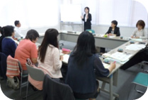

|
|
■議 題
「CO・OP商品における化学物質のリスク管理に関する政策検討委員会」の報告 講師：日本生協連 組合員活動部  ・化学物質 意図的（目的がある、ゼロは可能）と非意図的（メリットはない、ゼロは困難）。リスクが高いかどうかは摂取量によります。天然物を含め、絶対安全はありません。 ・リスク管理政策の見直し 食品安全行政の枠組みが大きく進展（食品安全基本法の制定や食品安全委員会の設置、リスクアナリシスの仕組みが整う、情報公開が進みます）。 ・食品安全行政の課題 行政の体制が不十分、迅速な対応が困難、リスクコミュニケーションの規模や方法が不十分です。 ・化学物質のリスク管理政策 考え方は国のリスク評価・管理をもとにより良くしていく。国の不十分な点を埋める努力を行うことで、国全体の食品安全レベルを向上させることができます。必要に応じ自主基準を設定。科学的データの集積により未解明だったことがわかってきました。 ・今後の課題 行政へ意見提出。社会へ発信。リスク情報に目を配る。リスク管理の強化。リスクコミュニケーションを進める。国の食品安全システムの発展に貢献。 【報告事項】
|